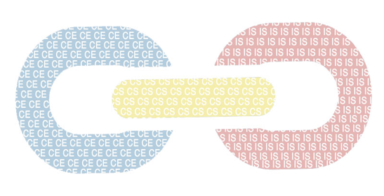
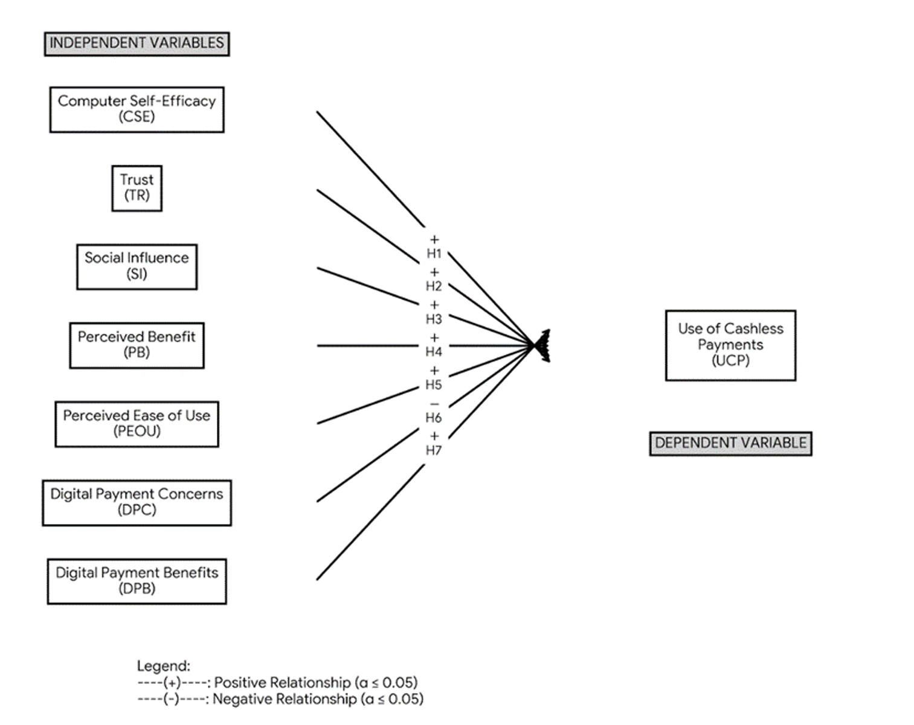
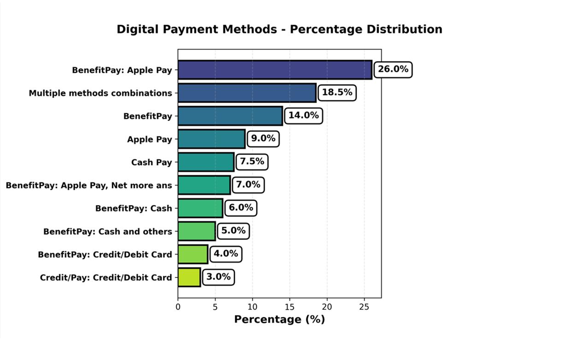
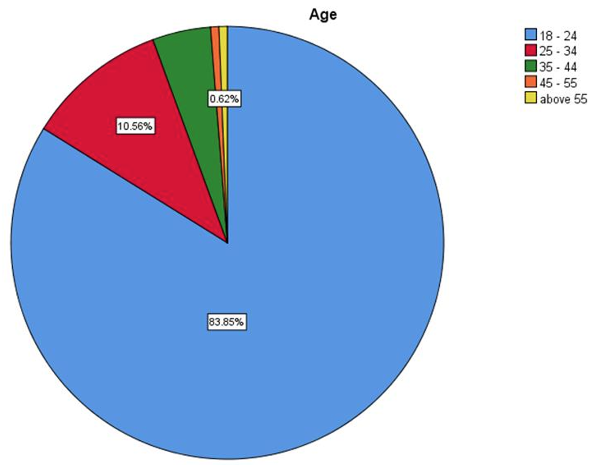
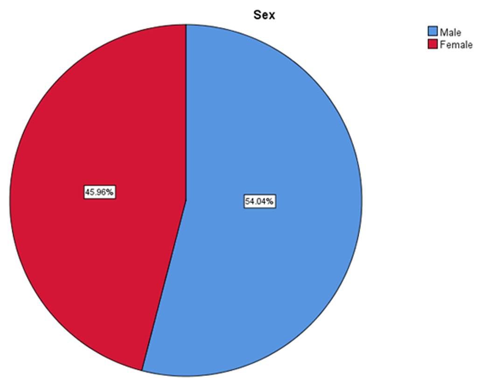
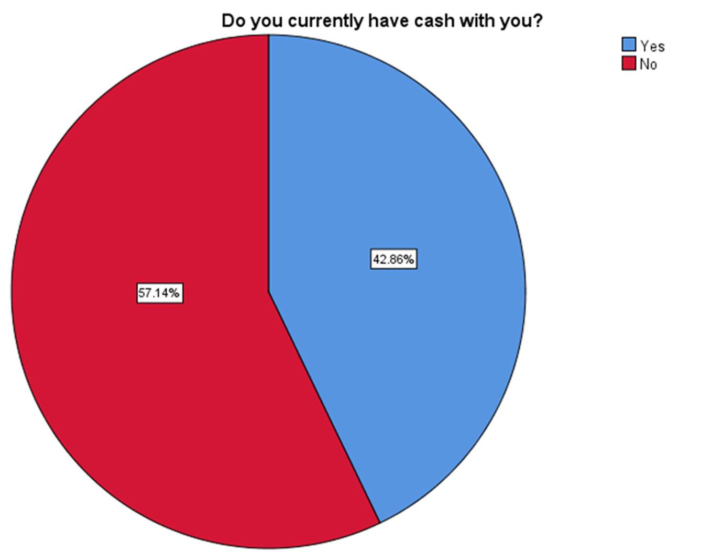
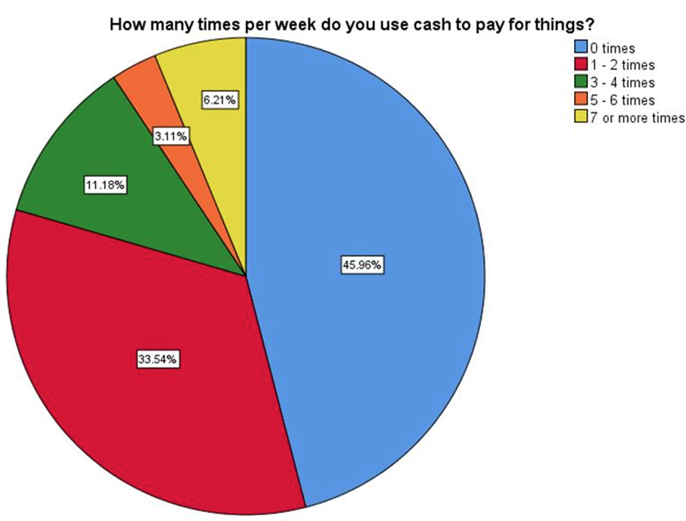
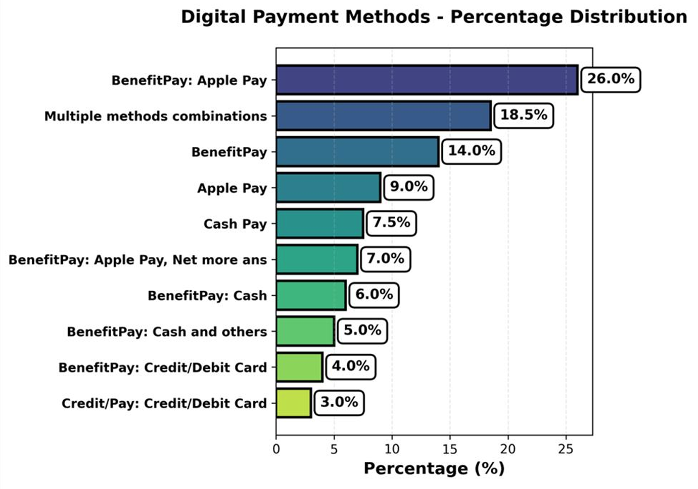
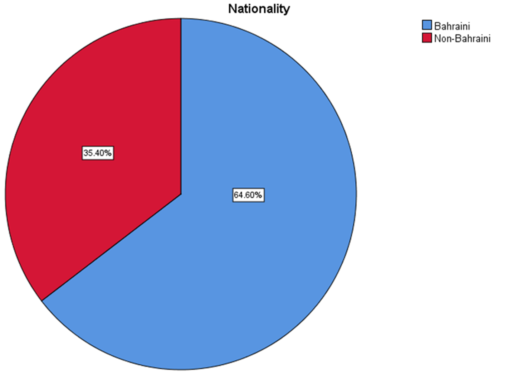

This project looks at how Bahrain is moving toward a cashless or less-cash society by focusing on how willing people are to use digital payments. It examines three main positives: convenience, security, and speed. But also considering worries such as privacy, the digital device, and technology limits. The study aims to measure willingness to adopt, find the main issues, and suggests ways to make digital payments more secure and inclusive.
Towards a Cashless Society in Bahrain
Exploring Digital Payment Adoption and Public Readiness
Abstract
This study is dedicated to a closer look at the evolution towards a cashless society or the one with less cash in it within the Kingdom of Bahrain, whereby citizens' and residents' willingness to adopt digital payment systems is the point in question. The research is based on three main factors, which are convenience, security, and speed, and on the other side, but equally important, the issue of privacy implications, digital divide, and technological restrictions were also studied. The study was conducted through a structured questionnaire delivered to be different categories of the population across Bahrain. The main goal of the research is to measure the intensity of public subjection, pinpoint obstacles to the diffusion, and provide possible suggestions on how to enable a secure as well as inclusive electronic finance. This research directly supports the national goal of Bahrain by the establishment of digital financial transformation and the encouragement of financial innovation.
Team Members
UNIVERSITY OF BAHRAIN
COLLEGE OF INFORMATION TECHNOLOGY
CYBERSECURITY SENIOR PROJECTS

CASHLESS OR LESS CASH SOCIETY
ABSTRACT
OBJECTIVES
- Investigate the acceptance level of cashless payment systems among the public in Bahrain.
- Analyze the benefits and drawbacks perceived by individuals regarding digital payment systems.
- Examine the influence of demographic factors on public acceptance.
METHODS/DIAGRAMS/FIGURES


RESULTS
The survey included 161 participants; about 84% were aged 18-34. Out of 7 hypotheses, 5 were supported. Social influence had the strongest effect on intention to use cashless payments (β = .247), followed by computer self-efficacy, ease of use, trust, and perceived benefit (all significant at p < 0.05).
CONCLUSION & FUTURE WORK
This study shows that young, educated people in Bahrain are the main users of cashless payments, influenced by social circles, trust, ease of use, and computer skills. Older and less educated groups were not well represented, so their views are still unknown. Future work should focus on these groups and test ways to reduce barriers to using cashless payments.
Project Rationale
Problem Statement
In recent years, many countries are transitioning from cash to digital payments. Bahrain is experiencing increased adoption of online payments, mobile wallets, and banking apps. However, moving completely away from cash presents challenges related to privacy, security, and digital accessibility concerns.
This project examines the readiness and willingness of Bahrain's population to adopt digital payment and cashless systems and reduce reliance on cash. While cashless payment systems are increasingly being implemented and studied globally, limited research exists on public perception and adoption readiness in Bahrain. A 2023 Statista report indicates that approximately 32% of people in the Middle East and North Africa still rely heavily on cash, suggesting that traditional payment methods remain prevalent.
Significance of the Project
For Stakeholders
This project is significant for financial institutions, government agencies, and cybersecurity professionals. Understanding public perception of digital payment and cashless systems helps shape future policies, ensures smooth transitions to digital economies, and identifies necessary safeguards. For society, it highlights the challenges and opportunities in adapting to new technologies while ensuring financial inclusion and privacy protection.
National Alignment
This research directly supports Bahrain's national goals by advancing digital financial transformation and encouraging financial innovation, aligning with Economic Vision 2030 and the country's digital transformation strategies.
Research Objectives
| Objective | Description |
|---|---|
| Investigate Acceptance Level | Examine how widely a cashless society and digital payment systems are accepted among citizens and residents of Bahrain, and assess the public’s readiness to reduce reliance on cash. |
| Analyze Benefits and Drawbacks | Evaluate the perceived advantages and disadvantages of using digital payment and cashless systems from the perspective of individuals in Bahrain |
| Examine Demographic Influences | Explore how demographic factors such as age, education level, and income influence public acceptance of digital payment systems |
Research Questions
To achieve these objectives, the study addresses three main research questions:
RQ1
How widely accepted is a cashless society among the citizens and residents of Bahrain at present?
RQ2
What are the perceived pros and cons of using digital payment and cashless systems?
RQ3
In what way do demographic traits influence the public's acceptance of cashless payment systems?
Methodology
Research Approach
This study employs a quantitative research methodology using a structured survey to assess acceptance and understanding of digital payment and cashless systems in Bahrain. The research is grounded in established theoretical frameworks including the Technology Acceptance Model (TAM), Unified Theory of Acceptance and Use of Technology (UTAUT), and Innovation Diffusion Theory.
Theoretical Frameworks:
- Technology Acceptance Model (TAM)
- Unified Theory of Acceptance and Use of Technology (UTAUT)
- Innovation Diffusion Theory
Research Model & Hypotheses
The study uses an integrated model combining elements from TAM, UTAUT, and extended perception-based factors. Seven hypotheses were formulated to test relationships between independent variables and the use of cashless payments:
| Hypothesis | Description |
|---|---|
| H1 | Computer Self-Efficacy has a significant positive impact on the Use of Cashless Payments |
| H2 | Trust has a significant positive impact on the Use of Cashless Payments |
| H3 | Social Influence has a significant positive impact on the Use of Cashless Payments |
| H4 | Perceived Benefit has a significant positive impact on the Use of Cashless Payments |
| H5 | Perceived Ease of Use has a significant positive impact on the Use of Cashless Payments |
| H6 | Digital Payment Concerns has a significant negative impact on the Use of Cashless Payments |
| H7 | Digital Payment Benefits has a significant positive impact on the Use of Cashless Payments |
Data Collection Process
Step 1: Survey Design
Structured questionnaire with 5-point Likert scale items measuring all research constructs and demographic variables
→
Step 2: Sample Selection
Targeted diverse population across Bahrain including various ages, education levels, and occupational backgrounds
→
Step 3: Distribution
Online survey distributed to participants, yielding 161 valid responses for analysis
Step 4: Reliability Testing
Cronbach's alpha = 0.939 confirming excellent internal consistency of measurement instrument
→
Step 5: Statistical Analysis
SPSS v26.0 used for descriptive statistics, correlation analysis, and multiple linear regression
Measurement Variables
| Variable | Description |
|---|---|
| Computer Self-Efficacy | Confidence in using digital payment methods and solving related technical problems |
| Trust | Belief in the security, reliability, and safety of digital payment systems |
| Social Influence | Impact of family, friends, and social media on adoption decisions |
| Perceived Benefit | Time savings, convenience, and efficiency gains from digital payments |
| Perceived Ease of Use | Simplicity and user-friendliness of digital payment system interfaces |
| Digital Payment Concerns | Worries about security, privacy, and technical issues |
| Behavioral Intention | Willingness to use digital payments in the future |
| Use of Cashless Payments | Current usage patterns and reliance on digital payment methods |
Findings & Results
Demographic Profile
The survey included 161 participants with the following characteristics:
Age Distribution

83.9% aged 18-24 | 10.6% aged 25-34
4.3% aged 35-44 | 1.2% aged 45+
Gender Distribution

54% Male | 46% Female
Occupation Distribution

72.7% Students | 14.9% Employed
11.2% Unemployed | 1.2% Retired
Education Level Distribution

65.2% Bachelor's | 24.2% High School
8.1% Diploma | 1.8% Postgraduate
Payment Behavior Patterns
Current Cash Possession

57.1% do not carry cash
42.9% carry cash
Frequency of Cash Usage Per Week

46% never | 33.5% use 1-2 times
11.2% use 3-4 times | 9.3% use 5+ times
Digital Payment Methods Used

26% BenefitPay + Apple Pay
18.5% Multiple | 14% BenefitPay | 9% Apple Pay
Nationality Distribution

64.6% Bahraini
35.4% Non-Bahraini
Hypothesis Testing Results
The multiple regression model achieved exceptional fit (R² = 0.990), explaining 99% of variance in cashless payment usage. Five out of seven hypotheses were supported:
| Hypothesis | Variable | Beta (β) | p-value | Result |
|---|---|---|---|---|
| H1 | Computer Self-Efficacy | 0.196 | < 0.001 | SUPPORTED |
| H2 | Trust | 0.175 | < 0.001 | SUPPORTED |
| H3 | Social Influence | 0.247 | < 0.001 | SUPPORTED (Strongest) |
| H4 | Perceived Benefit | 0.157 | < 0.001 | SUPPORTED |
| H5 | Perceived Ease of Use | 0.186 | < 0.001 | SUPPORTED |
| H6 | Digital Payment Concerns | -0.016 | 0.124 | NOT SUPPORTED |
| H7 | Digital Payment Benefits | 0.023 | 0.075 | NOT SUPPORTED |
User Perceptions
Mean scores for each construct measured on a 5-point Likert scale (1 = Strongly Disagree to 5 = Strongly Agree):
| Variable | Mean Score | Interpretation |
|---|---|---|
| Perceived Ease of Use | 4.40 | Very easy to use and learn |
| Perceived Benefit | 4.39 | Strong agreement on time savings and convenience |
| Behavioral Intention | 4.39 | High intention to continue and increase usage |
| Use of Cashless Payments | 4.27 | Current usage already very high |
| Computer Self-Efficacy | 4.20 | High confidence in digital skills |
| Digital Payment Benefits | 4.14 | Recognition of speed and safety advantages |
| Trust | 4.00 | Moderate to high trust in systems |
| Social Influence | 3.97 | Moderate influence from social networks |
| Digital Payment Concerns | 3.96 | Aware of concerns but not deterred |
Key Findings Summary
Social Influence emerged as the strongest predictor (β = 0.247) of cashless payment adoption, highlighting the critical role of peer recommendations and social norms
All five technology acceptance factors (self-efficacy, trust, social influence, perceived benefit, and ease of use) significantly predicted usage behavior
Despite awareness of security and privacy concerns (mean = 3.96), these concerns did not significantly deter adoption among the primarily young, educated sample
The excellent model fit (R² = 0.990) and high reliability (Cronbach's alpha = 0.939) confirm the robustness of the findings
Payment behavior shows a clear shift away from cash, with 57.1% not carrying cash and 46% never using cash weekly
Future Work & Recommendations
Study Implications
This study shows that young, educated people in Bahrain are the main users of cashless payments, influenced by social circles, trust, ease of use, and computer skills. However, older and less educated groups were not well represented, so their views are still unknown. The research provides strong evidence supporting Bahrain's digital transformation goals while highlighting areas needing attention for inclusive adoption.
Future Research Directions
🎯 Diverse Demographics
Future work should focus on underrepresented groups including older adults, less educated populations, and various occupational backgrounds to understand their barriers and enablers for cashless payment adoption.
📊 Longitudinal Studies
Conduct long-term studies tracking adoption patterns over time to understand how attitudes and behaviors evolve as digital payment systems mature and become more widespread in society.
🤝 Digital Literacy Programs
Design and test educational interventions targeting different age groups and skill levels to improve computer self-efficacy and reduce adoption barriers through structured training programs.
Recommendations for Stakeholders
🏦 For Financial Institutions
- Leverage social influence through referral programs, testimonials, and community-building initiatives since social factors are the strongest adoption predictor
- Enhance trust through transparent communication about security measures, regulatory compliance, and fraud protection guarantees
- Invest in user experience design focusing on simplicity and intuitive interfaces to maintain high ease-of-use perceptions
- Develop targeted educational programs to build computer self-efficacy among less tech-savvy segments
🏛️ For Policymakers
- Establish robust regulatory frameworks covering consumer protection, data privacy, liability, and dispute resolution mechanisms
- Launch nationwide digital literacy initiatives with special focus on underrepresented groups including elderly and less educated populations
- Invest in digital payment infrastructure including merchant acceptance networks, interoperability standards, and reliable connectivity
- Align cashless payment promotion with national digital transformation narratives to build collective buy-in
- Create incentive programs encouraging both merchant acceptance and consumer adoption in early stages
💻 For Technology Developers
- Prioritize user-centered design with continuous testing and iterative improvements based on user feedback
- Implement progressive disclosure of features allowing novice users to access basic functions easily while offering advanced options for experienced users
- Incorporate social features enabling peer-to-peer transactions, bill splitting, and payment requests to leverage social influence dynamics
- Ensure robust cybersecurity measures and communicate security features transparently to build and maintain trust
Limitations & Challenges
This research acknowledges several limitations that should guide interpretation and future work:
Sample Bias: The sample heavily skewed toward
young adults (18-24) and students, limiting generalizability to
the broader Bahraini population
Cross-Sectional Design: The study captured
attitudes at a single point in time, preventing causal inference
and temporal pattern analysis
Self-Reported Data: Reliance on self-reported
measures may introduce social desirability bias and response bias
Digital Divide: Online survey methodology may
have excluded individuals with limited digital access or skills
Cultural Context: Findings are specific to
Bahrain's context and may not directly transfer to other Gulf or
Middle Eastern countries
Construct Overlap: Some measurement constructs
(perceived benefit vs. digital payment benefits) showed conceptual
overlap affecting independent effects
Path Forward
Future work should test ways to reduce barriers to using cashless payments across all demographic segments. Success in achieving a transition cashless society in Bahrain depends on inclusive strategies that address the needs, concerns, and capabilities of diverse population groups. Continued research, policy development, and technological innovation must work in concert to realize the vision of a secure, efficient, and equitable digital financial ecosystem that benefits all members of Bahraini society.